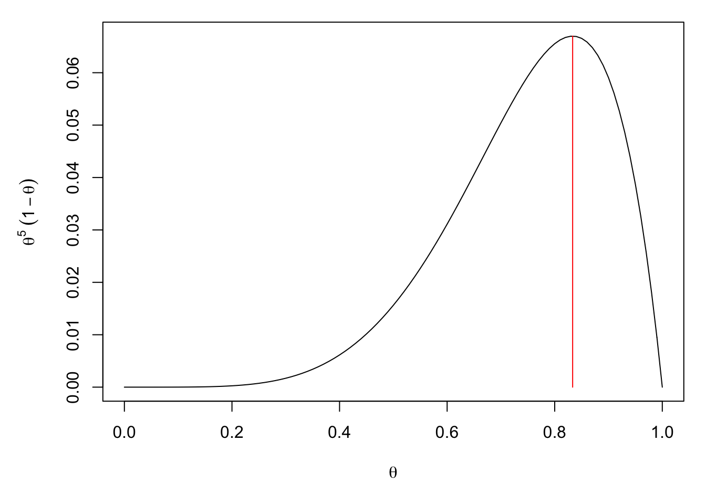

Chapter 1 Introducing likelihood methods
We now return to the problem of estimating parameters of statistical models (probability distributions). Previously, we simply stated the estimators we would use, for example, for \(X\sim Bin(n, \theta)\), we just stated that our estimator for \(\theta\) would be \(X/n\), and then justified this choice. But for more complicated models, it may not be obvious what a good choice of estimator is.
We now introduce the concept of likelihood, which is an important concept in statistical theory. Likelihood can be used to find estimators for statistical models, construct confidence intervals, perform hypothesis tests, and also plays a central role in Bayesian statistics.
1.1 Recap: maximising functions
We first recap how to maximise a function, as we will shortly be maximising likelihood functions.
Suppose that \(I\subseteq\mathbb{R}\) and that we have a differentiable function \(f:I\to\mathbb{R}\). We say that a point \(x_0\) maximises \(f\) if \[f(x_0)\geq f(x)\;\text{ for all }x\in I.\] That is, if \(x_0\) is the location of the global maximum value of \(f(\cdot)\).
Two key facts:
A point \(x_0\in I\) is a turning point of \(f\) if and only if \[\frac{df}{dx}\bigg|_{x=x_0}=0.\]
A turning point \(x_0\) of \(f\) is a local maximum if \[\frac{d^2f}{dx^2}\bigg|_{x=x_0}<0. \]
If a differentiable function \(f\) has a single turning point, and this turning point is a local maximum, then it is automatically the global maximum.
Example 1.1 (Maximisation of a function)
Find the value of \(\theta\) which maximises \(f(\theta)=\theta^5(1-\theta)\) on the range \(\theta\in[0,1]\).
Solution
First, we look for turning points. We have \[\begin{align*} f'(\theta) &=5\theta^4(1-\theta)+\theta^5(-1)\\ &=\theta^4(5-6\theta) \end{align*}\] So the turning points are at \(\theta=0\) and \(\theta=\frac56\). To see which ones are local maxima, we calculate the second derivative: \[\begin{align*} f''(\theta) &=4\theta^3(5-6\theta)+\theta^4(-6)\\ &=\theta^3(20-30\theta). \end{align*}\] So, \(f''(\frac56)=(\frac56)^3(20-25)<0\) and \(\theta=\frac56\) is a local maximum. Unfortunately, \(f''(0)=0\), so we don’t know if \(\theta=0\) is a local maximum, minimum or inflection. However, we can check that \(f(0)=0\), so it doesn’t matter which, we still have \(f(0)<f(\frac56)\).
Hence, \(\theta=\frac56\) is the global maximiser.

If more than one turning point appears, we have to be more careful (and, in this course, we will approach such cases through curve sketching or by using R).
1.2 Maximum likelihood estimation: a first example
Let us first illustrate the idea with an example. Suppose that we think that it is sensible to use the Geometric distribution \(Geom(\theta)\) to model the number of times we have to roll a biased die before we get a \(6\). What we don’t know, is which value of \(\theta\) is best to use. Clearly, we must have \(\theta\in(0,1)\) because we use the Geometric distribution, but how should we choose exactly which value of \(\theta\) to use?
Since we now care about the value of the parameter(s) \(\theta\), we will write the probability mass function as \(p_X(x;\theta)\), to make the dependence on \(\theta\) explicit. In this case, the Geometric distribution has probability mass function \(p_X(x;\theta)=\theta^x(1-\theta)\).
Suppose, for now, that we have a just single item of data; we roll the die \(5\) times until we first see a \(6\). We will worry about handling multiple data points later. If we let \(X\sim Geom(\theta)\), the probability of this event is \[p_X(5;\theta)=\theta^5(1-\theta).\] This is a function of \(\theta\).
Now, here is the key idea: since we observed the value \(5\), it would make sense if we chose \(\theta\) to make \(p_X(5;\theta)=Pr[X=5]\) as large as possible. That is, we want to choose \(\theta\) so as our model \(Geom(\theta)\) is as likely as possible to reproduce the data that we actually observed. So, what it comes down to, is finding the value of \(\theta\) which maximises the function \[L(\theta; 5)=p_X(5; \theta)=\theta^5(1-\theta)\] amongst the range of possible choices of \(\theta\), in this case \(\Theta=[0,1)\). We call \(L(\theta; 5)\) the likelihood of the parameter value \(\theta\), given the data \(5\). We write the (hopefully, unique) maximiser of \(L(\theta;5)\) as \(\hat\theta\), and we call it the maximum likelihood estimator of \(\theta\), given the (single) data point \(5\). We can find \(\hat\theta\) using Example 1.1: we know that \(\hat\theta=\frac{5}{6}\).